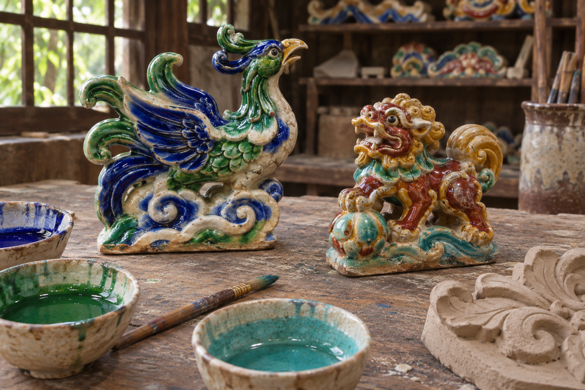
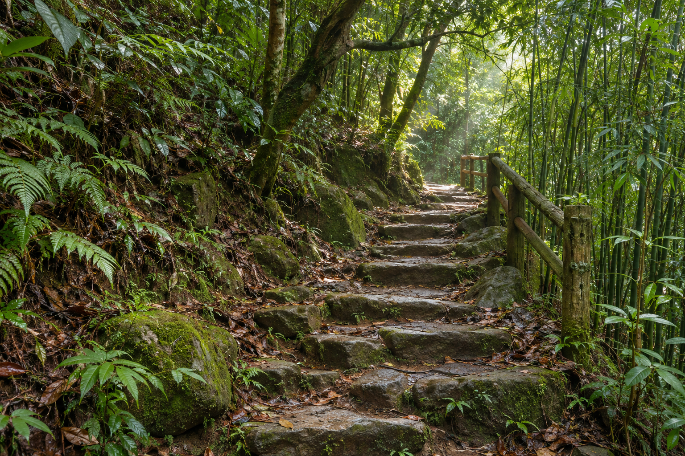
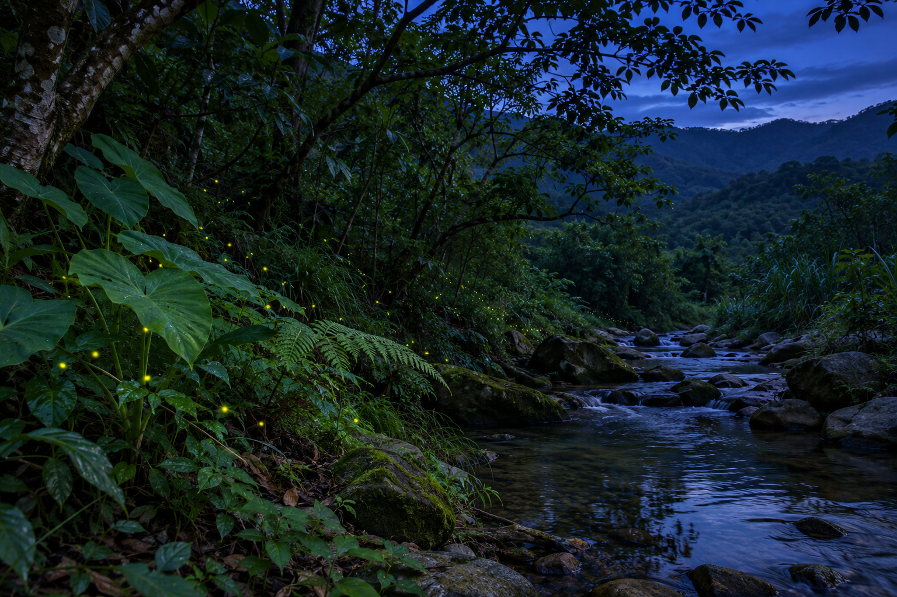
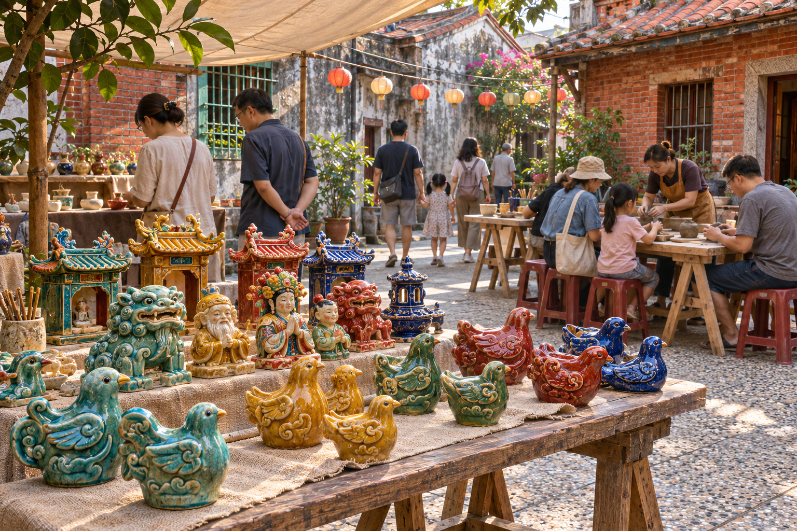

從屋脊到工作桌
從廟埕往上看，屋脊上的花鳥隔著一段路仍然醒目。走進工坊，便能近看陶胚、工具與釉色。
記下作品在哪裡、誰做的，以及居民怎麼稱呼它。

沿著以前的山徑
從聚落後方走入竹林，沿石階往上。岔路可能曾通往田地、鄰村，也可能是孩子放學後常走的路。
記下舊路名、分岔位置和整修前後的樣子。

溪邊入夜之後
天暗下來後，溪岸草叢偶爾閃起一點光。每次回來，把日期、天氣、植被和周圍照明一起記下。
請留在步道，避免強光照向草叢。

陶藝節回到街坊
工坊把作品帶到聚落的庭院。大人看老師傅修整陶胚，小孩試著捏出自己的第一件作品。
除了拍照，也可以保留當天的節目單和作品標籤。
把走過的路記下來
為照片補上日期和來源，也把不同年代的照片放在一起對照。杉溪鄉、路線與節慶場景為虛構，全站照片由 AI 彩色生成。
開啟地方記憶筆記 ↗回到起點 ↑